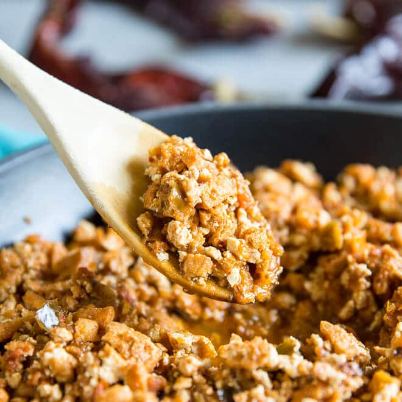

Sofritas

By the end, you'll be having something tasty like this!
Ever since I went to Chipotle, I've fallen in love with their Sofritas recipe.
The only problem with it, is that I never knew how to make it at home! Luckily, I found this recipe
with step-by-step instructions that detail exactly how to make this mouthwatering meal!
This recipe will provide you with the ingredients and instructions so that you too can enjoy your very own Chipotle in the comfort of your own home!
Ingredients
For the Marinade
- 1 medium green bell pepper (about ½ cup)
- 1 medium tomato quartered
- 1/2 medium onion quartered
- 1/2 cup water plus additional water as needed for braising the tofu
- 2 chipotle chilies plus 2 tablespoons adobo sauce
- 2 cloves garlic
- 1 teaspoon red wine vinegar
- 1 teaspoon ancho chile powder
- 1 teaspoon ground cumin
- ½ teaspoon dried oregano (see notes)
- ½ teaspoon Salt and freshly ground black pepper
For the Tofu
- 1 tablespoon of olive oil or rice bran oil
- 1 (16 ounce) package extra firm tofu pressed, cut into 8 slices